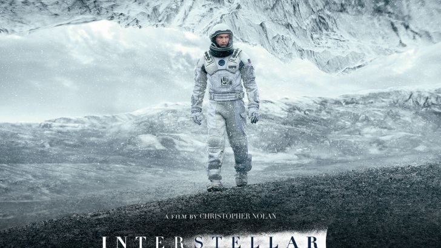

Interstellar was directed by Christopher Nolan and released in 2014. I watched Interstellar for the first time earlier this year with my father and it instanstly became my favorite movie after finishing it. It follows the story of an astronaut looking for another planet that can support life due to massive famine on Earth. Throughout his journey there are many sad moments along with times that leave you confused until the very end when everything falls into place. The mix of emotions created from the movie and its soundtrack is the reason it became my favorite.
